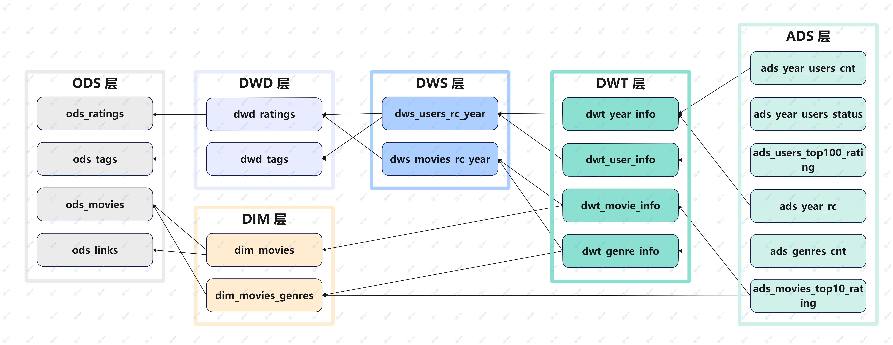

MovieLens 离线数仓实施与数据仪表板搭建
Author: json.wong.work@gmail.com
Index: https://github.com/jsonww/movielens-offline-data-warehouse
MovieLens 离线数仓实施与数据仪表板搭建项目背景项目目的数据准备数据源数据解释项目环境数据获取数仓建模主题域划分可视化数据需求维度建模数仓分层ODS 层DWD 层 / DIM 层DWS 层 / DWT 层ADS 层数仓实施命名规范ODS 层DIM 层DWD 层DWS 层DWT 层ADS 层分层结果数据地图数仓分层评估数据仪表板搭建使用 Sqoop 将 Hive 数据表导入 MySQL使用 Superset 搭建数据仪表板
项目背景
MovieLens 是一个提供五星评级和免费文本标记电影服务网站，包含 25000095 个评级和 1093360 个标签应用程序，涉及 62423 部电影。这些数据是由 162541 名用户在 1995年1月9日 ~ 2019年11月21日 期间创建的。
项目目的
为规范网站的电影评级与文本标记数据存储，并提供数据可视化分析，基于 Hadoop+Hive 搭建离线数仓并使用 Superset 搭建数据仪表板。
注：本项目中提及的数仓特指离线数仓。
数据准备
数据源
- 数据集主页：https://grouplens.org/datasets/movielens/
- 数据集文档：https://files.grouplens.org/datasets/movielens/ml-25m-README.html
数据解释
评级数据文件（ratings.csv）
- userId：用户 ID
- movieId：电影 ID
- rating：评级，采用 5 星等级，以半星为增量（0.5 星 - 5.0 星）。
- timestamp：评级时间戳
标签数据文件（tags.csv）
- userId：用户 ID
- movieId：电影 ID
- tag：用户给电影的标签，一个单词或短语
- timestamp：标签时间戳
电影数据文件（movies.csv）
movieId：电影 ID
title：电影名称
genres：电影类型，仅含以下选项
Action | Adventure | Animation | Children's | Comedy | Crime | Documentary | Drama |Fantasy | Film-Noir| Horror | Musical | Mystery | Romance | Sci-Fi | Thriller | War | Western | (no genres listed)
电影链接数据文件(links.csv）
- movieId：电影 ID
- imdbId：https://movielens.org 使用的电影 ID。例如，电影《玩具总动员》的链接http://www.imdb.com/title/tt0114709/。
- tmdbId：https://www.themoviedb.org 使用的电影 ID。例如，电影《玩具总动员》的链接https://www.themoviedb.org/movie/862。
项目环境
本次离线数仓项目实施与数据仪表板搭建基于以下版本的环境与工具：
- 操作系统：CentOS 7.5
- 文件系统：Hadoop 3.1.3
- Hadoop 数据库：Hive 3.1.2
- 关系型数据库：MySQL 8.0
- HDFS 与 MySQL 数据传递：Sqoop 1.4.6
- BI 分析工具：Superset
数据获取
xxxxxxxxxx# 下载数据wget -c https://files.grouplens.org/datasets/movielens/ml-25m.zip# 解压unzip ml-25m.zip# 上传至 hdfshadoop fs -put ml-25m /upload
数仓建模
主题域划分
根据数据中涉及的维度信息，划分主题域如下：
- 电影主题域
- 电影类型主题域
- 用户主题域
- 年度主题域
可视化数据需求
为了解网站历年来用户与业务的数据统计情况，本次仪表板搭建确定的可视化数据需求如下：
- 历年累计评级/标签数量变化
- 历年的年度平均评级和累计平均评级变化
- 各电影类型数量
- 各电影类型的评级与标签数量
- 评级数量前十的电影及其评级相关信息
- 每年评级/标签用户数量变化
- 每年第一次使用和最近一次使用的用户数量
- 评级数量前 100 用户及其评级相关信息
维度建模
根据数据中的主要业务与相关维度确定一致性维度与一致性事实，绘制总线矩阵如下：

数仓分层
为分解复杂任务、减少重复开发，对数仓进行分层，通过中间层提高复用率并方便后期需求拓展。
ODS 层
操作：本层创建外部表直接加载原始数据文件，不对原始数据文件作任何修改，仅作备份用途。
注意事项：
原始数据文件中的某些字段存在半角逗号
,，与数据文件格式 csv 的默认分隔符相同，为避免数据加载到 hive 的过程中字段分割错误造成数据混乱，使用 OpenCSVSerde 解析加载数据文件，此时加载的数据字段都是字符串类型。
DWD 层 / DIM 层
操作：
- DWD 层：抽取数据文件中的具体业务过程信息构成行为事实表。
- DIM 层：抽取数据文件中可单独或重复使用的维度信息构成维度表。
DWS 层 / DWT 层
为方便后期拓展与提高中间数据的复用率，划分 DWS 层与 DWT 层分别进行面向单一维度的轻度汇总和面向主题的汇总：
- DWS 层：在 DWD 层的业务过程基础上，以年为时间粒度，分别对用户、电影的评级和标签情况进行轻度汇总。
- DWT 层：在 DWS 层的轻度汇总基础上，分别以年度、用户、电影、电影类型为主题进行评级和标签情况的全量汇总。
ADS 层
本项目中 ADS 层作为需求方获取数仓统计数据的唯一接口，存放高频需求与应用所需要的数据。每张表单独对应一个需求或应用，经 Sqoop 导出至 MySQL 以供 Superset 搭建数据仪表板。
数仓实施
命名规范
本次数仓搭建过程中，各层数仓数据库及其数据表的命名规范如下：
| 实体 | 命名规范 |
|---|---|
| 数据库 | ml_<数仓层次> |
| ODS 层数据表 | ods_<数据来源> |
| DWD 层数据表 | dwd_<业务> |
| DIM 层数据表 | dim_<维度> |
| DWS 层数据表 | dws_<汇总相关粒度>_<汇总时间周期> |
| DWT 层数据表 | dwt_<主题> |
| ADS 层数据表 | ads_<统计业务> |
ODS 层
ods_ratings
加载评级数据文件（ratings.csv）：
xCREATE DATABASE IF NOT EXISTS ml_ods;CREATE EXTERNAL TABLE IF NOT EXISTS ml_ods.ods_ratings(userId INT COMMENT '用户id',movieId INT COMMENT '电影id',rating FLOAT COMMENT '评级',times BIGINT COMMENT '评级时间戳') COMMENT '评级表'ROW FORMAT SERDE 'org.apache.hadoop.hive.serde2.OpenCSVSerde'WITH SERDEPROPERTIES ("separatorChar" = ",","quoteChar" = "\"","escapeChar" = "\\")STORED AS TEXTFILELOCATION '/warehouse/ml/ods/ratings'TBLPROPERTIES ('skip.header.line.count'='1');LOAD DATA INPATH "/upload/ml-25m/ratings.csv"INTO TABLE ml_ods.ods_ratings;ods_tags
加载标签数据文件（tags.csv）：
xxxxxxxxxxCREATE DATABASE IF NOT EXISTS ml_ods;CREATE EXTERNAL TABLE IF NOT EXISTS ml_ods.ods_tags(userId INT COMMENT '用户id',movieId INT COMMENT '电影id',tag STRING COMMENT '标签',times BIGINT COMMENT '标签时间戳') COMMENT '标签表'ROW FORMAT SERDE 'org.apache.hadoop.hive.serde2.OpenCSVSerde'WITH SERDEPROPERTIES ("separatorChar" = ",","quoteChar" = "\"","escapeChar" = "\\")STORED AS TEXTFILELOCATION '/warehouse/ml/ods/tags'TBLPROPERTIES ('skip.header.line.count'='1');LOAD DATA INPATH "/upload/ml-25m/tags.csv"INTO TABLE ml_ods.ods_tags;ods_movies
加载电影数据文件（movies.csv）：
xxxxxxxxxxCREATE DATABASE IF NOT EXISTS ml_ods;CREATE EXTERNAL TABLE IF NOT EXISTS ml_ods.ods_movies(movieId INT COMMENT '电影id',title STRING COMMENT '电影标题',genres STRING COMMENT '电影类型合集') COMMENT '电影表'ROW FORMAT SERDE 'org.apache.hadoop.hive.serde2.OpenCSVSerde'WITH SERDEPROPERTIES ("separatorChar" = ",","quoteChar" = "\"","escapeChar" = "\\")STORED AS TEXTFILELOCATION '/warehouse/ml/ods/movies'TBLPROPERTIES ('skip.header.line.count'='1');LOAD DATA INPATH "/upload/ml-25m/movies.csv"INTO TABLE ml_ods.ods_movies;SELECTmovieId,genFROM(SELECTmovieId,`genres`FROMml_ods.ods_moviesWHEREmovieId = 1) AS resLATERAL VIEWEXPLODE(SPLIT(genres, '\\|')) gen_tmp AS gen;ods_links
加载电影链接数据文件(links.csv）：
xxxxxxxxxxCREATE DATABASE IF NOT EXISTS ml_ods;CREATE EXTERNAL TABLE IF NOT EXISTS ml_ods.ods_links(movieId INT COMMENT '电影id',imdbId INT COMMENT 'imdb链接 -- http://www.imdb.com/title/<imdbId>/.',tmdbId INT COMMENT 'themoviedb链接 -- https://www.themoviedb.org/movie/<imdbId>.') COMMENT '链接表'ROW FORMAT SERDE 'org.apache.hadoop.hive.serde2.OpenCSVSerde'WITH SERDEPROPERTIES ("separatorChar" = ",","quoteChar" = "\"","escapeChar" = "\\")STORED AS TEXTFILELOCATION '/warehouse/ml/ods/links'TBLPROPERTIES ('skip.header.line.count'='1');LOAD DATA INPATH "/upload/ml-25m/links.csv"INTO TABLE ml_ods.ods_links;
DIM 层
dim_movies
将与电影相关的所有相关维度信息汇总成电影维度信息表：
xxxxxxxxxxCREATE DATABASE IF NOT EXISTS ml_dim;CREATE EXTERNAL TABLE IF NOT EXISTS ml_dim.dim_movies(movie_id INT COMMENT '电影id',title STRING COMMENT '电影标题',imdb_id INT COMMENT 'imdb链接 -- http://www.imdb.com/title/<imdbId>/.',tmdb_id INT COMMENT 'themoviedb链接 -- https://www.themoviedb.org/movie/<imdbId>.',genres STRING COMMENT '电影类型合集') COMMENT '电影维度表'STORED AS PARQUETLOCATION '/warehouse/ml/dim/dim_movies/';INSERT OVERWRITE TABLE ml_dim.dim_moviesSELECTm.movieId AS movie_id,m.title AS title,l.imdbId AS imdb_id,l.tmdbId AS tmdb_id,m.genres AS genresFROMml_ods.ods_movies AS mLEFT JOINml_ods.ods_links AS lONm.movieId = l.movieId;dim_movies_genres
为方便上层数仓按电影类型进行汇总统计，将电影的类型集合信息拆分成”电影，单个电影类型”的一一对应形式：
xxxxxxxxxxCREATE DATABASE IF NOT EXISTS ml_dim;CREATE EXTERNAL TABLE IF NOT EXISTS ml_dim.dim_movies_genres(movie_id INT COMMENT '电影id',genre STRING COMMENT '电影类型') COMMENT '电影类型表'STORED AS PARQUETLOCATION '/warehouse/ml/dim/dim_movies_genres/';INSERT OVERWRITE TABLE ml_dim.dim_movies_genresSELECTmovieId AS movie_id,gen AS genreFROMml_ods.ods_movies AS mLATERAL VIEWEXPLODE(SPLIT(m.genres, '\\|')) gen_tmp AS gen; -- SQL 通过 shell 脚本的方式执行， ‘|’ 需要进行转义
DWD 层
dwd_ratings
抽取评级数据表并对字段进行规范统一命名：
xxxxxxxxxxCREATE DATABASE IF NOT EXISTS ml_dwd;CREATE EXTERNAL TABLE IF NOT EXISTS ml_dwd.dwd_ratings(user_id INT COMMENT '用户id',movie_id INT COMMENT '电影id',rating FLOAT COMMENT '评级',rating_time BIGINT COMMENT '评级时间戳') COMMENT '评级表'STORED AS PARQUETLOCATION '/warehouse/ml/dwd/dwd_ratings/';INSERT OVERWRITE TABLE ml_dwd.dwd_ratingsSELECTuserId AS user_id,movieId AS movie_id,rating,times AS rating_timeFROMml_ods.ods_ratings;dwd_tags
抽取标签数据表并对字段进行规范统一命名：
xxxxxxxxxxCREATE DATABASE IF NOT EXISTS ml_dwd;CREATE EXTERNAL TABLE IF NOT EXISTS ml_dwd.dwd_tags(user_id INT COMMENT '用户id',movie_id INT COMMENT '电影id',tag STRING COMMENT '标签',tag_time BIGINT COMMENT '标签时间戳') COMMENT '标签表'STORED AS PARQUETLOCATION '/warehouse/ml/dwd/dwd_tags/';INSERT OVERWRITE TABLE ml_dwd.dwd_tagsSELECTuserId AS user_id,movieId AS movie_id,tag,times AS tag_timeFROMml_ods.ods_tags;
DWS 层
dws_movies_rc_year
以年为时间粒度，以电影为主体，对电影的评级和标签相关数据进行汇总。
xxxxxxxxxxCREATE DATABASE IF NOT EXISTS ml_dws;CREATE EXTERNAL TABLE IF NOT EXISTS ml_dws.dws_movies_rc_year (year SMALLINT COMMENT '年份',movie_id INT COMMENT '电影id',ratings_cnt INT COMMENT '评级数',avg_ratings FLOAT COMMENT '评级',min_rating_time BIGINT COMMENT '最早评级时间',max_rating_time BIGINT COMMENT '最近评级时间',tags_cnt INT COMMENT '标签数',min_tag_time BIGINT COMMENT '最早标签时间',max_tag_time BIGINT COMMENT '最近标签时间') COMMENT '电影历年评级标签汇总'STORED AS PARQUETLOCATION '/warehouse/ml/dws/dws_movies_rc_year/';WITHtmr AS (SELECTFROM_UNIXTIME(rating_time, 'yyyy') AS year,movie_id,COUNT(*) AS ratings_cnt,ROUND(AVG(rating), 2) AS avg_ratings,MIN(rating_time) AS min_rating_time,MAX(rating_time) AS max_rating_timeFROMml_dwd.dwd_ratingsGROUP BYFROM_UNIXTIME(rating_time, 'yyyy'),movie_id),tmt AS (SELECTFROM_UNIXTIME(tag_time, 'yyyy') AS year,movie_id,COUNT(*) AS tags_cnt,MIN(tag_time) AS min_tag_time,MAX(tag_time) AS max_tag_timeFROMml_dwd.dwd_tagsGROUP BYFROM_UNIXTIME(tag_time, 'yyyy'),movie_id)INSERT overwrite TABLE ml_dws.dws_movies_rc_yearSELECTCOALESCE(tmr.year, tmt.year) AS year,COALESCE(tmr.movie_id, tmt.movie_id) AS movie_id,NVL(tmr.ratings_cnt, 0) AS ratings_cnt,NVL(tmr.avg_ratings, 0) AS avg_ratings,tmr.min_rating_time,tmr.max_rating_time,NVL(tmt.tags_cnt, 0) AS tags_cnt,tmt.min_tag_time,tmt.max_tag_timeFROMtmrFULL OUTER JOINtmtONtmr.year = tmt.year AND tmr.movie_id = tmt.movie_id;dws_users_rc_year
以年为时间粒度，以用户为主体，对用户的评级和标签相关数据进行汇总。
xxxxxxxxxxCREATE DATABASE IF NOT EXISTS ml_dws;CREATE EXTERNAL TABLE IF NOT EXISTS ml_dws.dws_users_rc_year (last_i_year TINYINT COMMENT '最近第几年',year SMALLINT COMMENT '年份',user_id INT COMMENT '用户id',ratings_cnt INT COMMENT '评级数',avg_ratings FLOAT COMMENT '评级',min_rating_time BIGINT COMMENT '最早评级时间',max_rating_time BIGINT COMMENT '最近评级时间',tags_cnt INT COMMENT '标签数',min_tag_time BIGINT COMMENT '最早标签时间',max_tag_time BIGINT COMMENT '最近标签时间') COMMENT '用户历年评级标签汇总'STORED AS PARQUETLOCATION '/warehouse/ml/dws/dws_users_rc_year/';WITHtur AS (SELECTFROM_UNIXTIME(rating_time, 'yyyy') AS year,user_id,COUNT(*) AS ratings_cnt,ROUND(AVG(rating), 2) AS avg_ratings,MIN(rating_time) AS min_rating_time,MAX(rating_time) AS max_rating_timeFROMml_dwd.dwd_ratingsGROUP BYFROM_UNIXTIME(rating_time, 'yyyy'),user_id),tut AS (SELECTFROM_UNIXTIME(tag_time, 'yyyy') AS year,user_id,COUNT(*) AS tags_cnt,MIN(tag_time) AS min_tag_time,MAX(tag_time) AS max_tag_timeFROMml_dwd.dwd_tagsGROUP BYFROM_UNIXTIME(tag_time, 'yyyy'),user_id)INSERT overwrite TABLE ml_dws.dws_users_rc_yearSELECTROW_NUMBER() OVER (PARTITION BY res.user_id ORDER BY res.year DESC) AS last_i_year,res.*FROM(SELECTCOALESCE(tur.year, tut.year) AS year,COALESCE(tur.user_id, tut.user_id) AS user_id,NVL(tur.ratings_cnt, 0) AS ratings_cnt,NVL(tur.avg_ratings, 0) AS avg_ratings,tur.min_rating_time AS min_rating_time,tur.max_rating_time AS max_rating_time,NVL(tut.tags_cnt, 0) AS tags_cnt,tut.min_tag_time AS min_tag_time,tut.max_tag_time AS max_tag_timeFROMturFULL OUTER JOINtutONtur.year = tut.year AND tur.user_id = tut.user_id) AS res;dws_movie_ratings
汇总电影的历史评级集合信息（电影的评级、相应的次数，并按评级大小升序排序）。
xxxxxxxxxxCREATE DATABASE IF NOT EXISTS ml_dws;CREATE EXTERNAL TABLE IF NOT EXISTS ml_dws.dws_movie_ratings (movie_id INT COMMENT '电影id',movie_ratings_dist STRING COMMENT '电影评级分布') COMMENT '电影评级分布表'STORED AS PARQUETLOCATION '/warehouse/ml/dws/dws_movie_ratings/';INSERT OVERWRITE TABLE ml_dws.dws_movie_ratingsSELECTmovie_id,CONCAT_WS(' | ', COLLECT_LIST(rc)) AS ratings_distFROM(SELECTmovie_id,CONCAT(rating, '(', rating_cnt, ')') AS rcFROM(SELECTmovie_id,rating,COUNT(*) AS rating_cntFROMml_dwd.dwd_ratingsGROUP BYmovie_id,rating) AS tmrc) AS tmrcrcGROUP BYmovie_id;dws_movie_tags
汇总电影的历史标签集合信息（电影的标签、相应的数量，并按数量大小降序排序）。
xxxxxxxxxxCREATE DATABASE IF NOT EXISTS ml_dws;CREATE EXTERNAL TABLE IF NOT EXISTS ml_dws.dws_movie_tags (movie_id INT COMMENT '电影id',movie_tags_dist STRING COMMENT '电影标签分布') COMMENT '电影标签集合表'STORED AS PARQUETLOCATION '/warehouse/ml/dws/dws_movie_tags/';INSERT OVERWRITE TABLE ml_dws.dws_movie_tagsSELECTmovie_id,CONCAT_WS(' | ', COLLECT_SET(tc)) AS tags_distFROM(SELECTmovie_id,CONCAT(tag, '(', tag_cnt, ')') AS tcFROM(SELECTmovie_id,tag,COUNT(*) AS tag_cntFROMml_dwd.dwd_tagsGROUP BYmovie_id,tagORDER BYmovie_id ASC,tag_cnt DESC) AS tttc) AS ttcGROUP BYmovie_id;
DWT 层
dwt_movie_info
汇总电影主题各项指标。
xxxxxxxxxxCREATE DATABASE IF NOT EXISTS ml_dwt;CREATE EXTERNAL TABLE IF NOT EXISTS ml_dwt.dwt_movie_info (movie_id INT COMMENT '电影id',movie_avg_ratings FLOAT COMMENT '电影平均评级',movie_ratings_cnt INT COMMENT '电影评级数',movie_ratings_dist STRING COMMENT '电影评级分布',movie_min_rating_time STRING COMMENT '电影最早评级时间',movie_max_rating_time STRING COMMENT '电影最近评级时间',movie_tags_cnt INT COMMENT '电影标签数量',movie_tags_dist STRING COMMENT '电影标签分布',movie_min_tag_time STRING COMMENT '电影最早标签时间',movie_max_tag_time STRING COMMENT '电影最近标签时间') COMMENT '电影详情表'STORED AS PARQUETLOCATION '/warehouse/ml/dwt/dwt_movie_info/';INSERT OVERWRITE TABLE ml_dwt.dwt_movie_infoSELECTtrc.movie_id,NVL(trc.avg_ratings, 0) AS movie_avg_ratings,trc.ratings_cnt,NVL(tr.movie_ratings_dist, '-') AS movie_ratings_dist,NVL(FROM_UNIXTIME(trc.min_rating_time), '-') AS min_rating_time,NVL(FROM_UNIXTIME(trc.max_rating_time), '-') AS max_rating_time,trc.tags_cnt,NVL(tt.movie_tags_dist, '-') AS movie_tags_dist,NVL(FROM_UNIXTIME(trc.min_tag_time), '-') AS min_tag_time,NVL(FROM_UNIXTIME(trc.max_tag_time), '-') AS max_tag_timeFROM(SELECTmovie_id,ROUND(SUM(ratings_cnt * avg_ratings) / SUM(ratings_cnt), 2) AS avg_ratings,SUM(ratings_cnt) AS ratings_cnt,MIN(min_rating_time) AS min_rating_time,MAX(max_rating_time) AS max_rating_time,SUM(tags_cnt) AS tags_cnt,MIN(min_tag_time) AS min_tag_time,MAX(max_tag_time) AS max_tag_timeFROMml_dws.dws_movies_rc_yearGROUP BYmovie_id) AS trcLEFT JOINml_dws.dws_movie_ratings AS trONtrc.movie_id = tr.movie_idLEFT JOINml_dws.dws_movie_tags AS ttONtrc.movie_id = tt.movie_id;dwt_user_info
汇总用户主题各项指标。
xxxxxxxxxxCREATE DATABASE IF NOT EXISTS ml_dwt;CREATE EXTERNAL TABLE IF NOT EXISTS ml_dwt.dwt_user_info (user_id INT COMMENT '用户id',user_years_n INT COMMENT '几年活动记录',user_avg_ratings FLOAT COMMENT '用户平均评级',user_ratings_cnt_all INT COMMENT '用户历史评级数',user_ratings_cnt_last1year INT COMMENT '用户最近1年评级数',user_ratings_cnt_last3year INT COMMENT '用户最近3年评级数',user_min_rating_time STRING COMMENT '用户最早评级时间',user_max_rating_time STRING COMMENT '用户最近评级时间',user_tags_cnt_all INT COMMENT '用户历史标签数量',user_tags_cnt_last1year INT COMMENT '用户最近1年标签数量',user_tags_cnt_last3year INT COMMENT '用户最近3年标签数量',user_min_tag_time STRING COMMENT '用户最早标签时间',user_max_tag_time STRING COMMENT '用户最近标签时间') COMMENT '用户详情表'STORED AS PARQUETLOCATION '/warehouse/ml/dwt/dwt_user_info/';INSERT OVERWRITE TABLE ml_dwt.dwt_user_infoSELECTuser_id,COUNT(1) AS years_n,ROUND(SUM(avg_ratings * ratings_cnt) / SUM(ratings_cnt), 2) AS avg_ratings,SUM(ratings_cnt) AS ratings_cnt_all,SUM(IF(last_i_year = 1, ratings_cnt, 0)) AS ratings_cnt_last1year,SUM(IF(last_i_year < 4, ratings_cnt, 0)) AS ratings_cnt_last3year,NVL(FROM_UNIXTIME(MIN(min_rating_time)), '-') AS min_rating_time,NVL(FROM_UNIXTIME(MAX(max_rating_time)), '-') AS max_rating_time,SUM(tags_cnt) AS tags_cnt_all,SUM(IF(last_i_year = 1, tags_cnt, 0)) AS tags_cnt_last1year,SUM(IF(last_i_year < 4, tags_cnt, 0)) AS tags_cnt_last3year,NVL(FROM_UNIXTIME(MIN(min_tag_time)), '-') AS min_tag_time,NVL(FROM_UNIXTIME(MAX(max_tag_time)), '-') AS max_tag_timeFROMml_dws.dws_users_rc_yearGROUP BYuser_id;dwt_genre_info
汇总电影类型主题各项指标。
xxxxxxxxxxCREATE DATABASE IF NOT EXISTS ml_dwt;CREATE EXTERNAL TABLE IF NOT EXISTS ml_dwt.dwt_genre_info (genre STRING COMMENT '电影类型',genre_movies_cnt INT COMMENT '该电影类型电影数量',genre_avg_ratings FLOAT COMMENT '该电影类型平均评级',genre_ratings_cnt INT COMMENT '该电影类型评级数',genre_min_rating_time STRING COMMENT '该电影类型最早评级时间',genre_max_rating_time STRING COMMENT '该电影类型最近评级时间',genre_tags_cnt INT COMMENT '该电影类型标签数量',genre_min_tag_time STRING COMMENT '该电影类型最早标签时间',genre_max_tag_time STRING COMMENT '该电影类型最近标签时间') COMMENT '电影类型详情表'STORED AS PARQUETLOCATION '/warehouse/ml/dwt/dwt_genre_info/';INSERT OVERWRITE TABLE ml_dwt.dwt_genre_infoSELECTtmg.genre,COUNT(DISTINCT tmrc.movie_id) AS movies_cnt,ROUND(SUM(tmrc.ratings_cnt * tmrc.avg_ratings) / SUM(tmrc.ratings_cnt), 2) AS avg_ratings,SUM(tmrc.ratings_cnt) AS ratings_cnt,NVL(FROM_UNIXTIME(MIN(tmrc.min_rating_time)), '-') AS min_rating_time,NVL(FROM_UNIXTIME(MAX(tmrc.max_rating_time)), '-') AS max_rating_time,SUM(tmrc.tags_cnt) AS tags_cnt,NVL(FROM_UNIXTIME(MIN(tmrc.min_tag_time)), '-') AS min_tag_time,NVL(FROM_UNIXTIME(MAX(tmrc.max_tag_time)), '-') AS max_tag_timeFROMml_dws.dws_movies_rc_year AS tmrcLEFT JOINml_dim.dim_movies_genres AS tmgONtmrc.movie_id = tmg.movie_idGROUP BYtmg.genre;dwt_year_info
汇总年度数据主题各项指标。
xxxxxxxxxxCREATE DATABASE IF NOT EXISTS ml_dwt;CREATE EXTERNAL TABLE IF NOT EXISTS ml_dwt.dwt_year_info (year SMALLINT COMMENT '年度',annual_rating_movies_cnt INT COMMENT '年度被评级电影数',annual_ratings_cnt INT COMMENT '年度评级次数',cumsum_ratings_cnt INT COMMENT '历史评级次数',annual_avg_ratings FLOAT COMMENT '年度平均评级',cumsum_avg_ratings FLOAT COMMENT '历史平均评级',annual_tag_movies_cnt INT COMMENT '年度被标签电影数',annual_tags_cnt INT COMMENT '年度标签次数',cumsum_tags_cnt INT COMMENT '历史标签次数',annual_users_cnt INT COMMENT '年度用户数',annual_rating_users_cnt INT COMMENT '年度评级用户数',annual_rating_users_percent FLOAT COMMENT '年度评级用户数占比',annual_tag_users_cnt INT COMMENT '年度标签用户数',annual_tag_users_percent FLOAT COMMENT '年度标签用户数占比',first_use_users_cnt INT COMMENT '当年第一次使用的用户数',recent_use_users_cnt INT COMMENT '当年最后一次使用的用户数') COMMENT '历年详情表'STORED AS PARQUETLOCATION '/warehouse/ml/dwt/dwt_year_info/';WITHtyc AS (SELECTyear,annual_rating_movies_cnt,annual_ratings_cnt,SUM(annual_ratings_cnt) OVER (ORDER BY year ASC) AS cumsum_ratings_cnt,annual_sum_ratings,SUM(annual_sum_ratings) OVER (ORDER BY year ASC) AS cumsum_sum_ratings,annual_tag_movies_cnt,annual_tags_cnt,SUM(annual_tags_cnt) OVER (ORDER BY year ASC) AS cumsum_tags_cntFROM(SELECTyear,COUNT(IF(ratings_cnt > 0, True, NULL)) AS annual_rating_movies_cnt,SUM(ratings_cnt) AS annual_ratings_cnt,SUM(ratings_cnt * avg_ratings) AS annual_sum_ratings,COUNT(IF(tags_cnt > 0, True, NULL)) AS annual_tag_movies_cnt,SUM(tags_cnt) AS annual_tags_cntFROMml_dws.dws_movies_rc_yearGROUP BYyear) AS ty),tu AS (SELECTyear,annual_users_cnt,annual_rating_users_cnt,ROUND(annual_rating_users_cnt / annual_users_cnt, 2) AS annual_rating_users_percent,annual_tag_users_cnt,ROUND(annual_tag_users_cnt / annual_users_cnt, 2) AS annual_tag_users_percentFROM(SELECTyear,COUNT(1) AS annual_users_cnt,COUNT(IF(ratings_cnt > 0, True, NULL)) AS annual_rating_users_cnt,COUNT(IF(tags_cnt > 0, True, NULL)) AS annual_tag_users_cntFROMml_dws.dws_users_rc_yearGROUP BYyear) AS turc),tuy AS (SELECTuser_id,MIN(year) AS first_year,MAX(year) AS recent_yearFROMml_dws.dws_users_rc_yearGROUP BYuser_id)INSERT OVERWRITE TABLE ml_dwt.dwt_year_infoSELECTtyc.year,tyc.annual_rating_movies_cnt,tyc.annual_ratings_cnt,tyc.cumsum_ratings_cnt,ROUND(tyc.annual_sum_ratings / tyc.annual_ratings_cnt, 2) AS annual_avg_ratings,ROUND(tyc.cumsum_sum_ratings / tyc.cumsum_ratings_cnt, 2) AS cumsum_avg_ratings,tyc.annual_tag_movies_cnt,tyc.annual_tags_cnt,tyc.cumsum_tags_cnt,tu.annual_users_cnt,tu.annual_rating_users_cnt,tu.annual_rating_users_percent,tu.annual_tag_users_cnt,tu.annual_tag_users_percent,NVL(tf.first_use_users_cnt, 0) AS first_use_users_cnt,NVL(tr.recent_use_users_cnt, 0) AS recent_use_users_cntFROMtycLEFT JOINtuONtyc.year = tu.yearLEFT JOIN(SELECTfirst_year AS year,COUNT(1) AS first_use_users_cntFROMtuyGROUP BYfirst_year) AS tfONtyc.year = tf.yearLEFT JOIN(SELECTrecent_year AS year,COUNT(1) AS recent_use_users_cntFROMtuyGROUP BYrecent_year) AS trONtyc.year = tr.year;
ADS 层
year_rc
- 历年累计评级/标签数量变化
- 历年的年度平均评级和累计平均评级变化
xxxxxxxxxxCREATE DATABASE IF NOT EXISTS ml_ads;CREATE EXTERNAL TABLE IF NOT EXISTS ml_ads.ads_year_rc (year STRING COMMENT '年度',annual_avg_ratings FLOAT COMMENT '年度平均评级',cumsum_avg_ratings FLOAT COMMENT '历史平均评级',annual_ratings_cnt INT COMMENT '年度评级数',cumsum_ratings_cnt INT COMMENT '历史评级数',annual_tags_cnt INT COMMENT '年度标签数',cumsum_tags_cnt INT COMMENT '历史标签数') COMMENT '每年评级标签数'STORED AS PARQUETLOCATION '/warehouse/ml/ads/ads_year_rc/';INSERT OVERWRITE TABLE ml_ads.ads_year_rcSELECTCONCAT(year, '-01-01') AS year,annual_avg_ratings,cumsum_avg_ratings,annual_ratings_cnt,cumsum_ratings_cnt,annual_tags_cnt,cumsum_tags_cntFROMml_dwt.dwt_year_info;genres_cnt
- 各电影类型数量
- 各电影类型的评级与标签数量
xxxxxxxxxxCREATE DATABASE IF NOT EXISTS ml_ads;CREATE EXTERNAL TABLE IF NOT EXISTS ml_ads.ads_genres_cnt (genre STRING COMMENT '电影类型',genre_movies_cnt INT COMMENT '该类型电影数量',genre_avg_ratings FLOAT COMMENT '该类型平均评级',genre_ratings_cnt INT COMMENT '该类型电影评级数量',genre_tags_cnt INT COMMENT '该类型电影标签数量') COMMENT '电影类型数量'STORED AS PARQUETLOCATION '/warehouse/ml/ads/ads_genres_cnt/';INSERT OVERWRITE TABLE ml_ads.ads_genres_cntSELECTgenre,genre_movies_cnt,genre_avg_ratings,genre_ratings_cnt,genre_tags_cntFROMml_dwt.dwt_genre_info;movies_rating_top10
评级数量前十的电影及其评级相关信息。
xxxxxxxxxxCREATE DATABASE IF NOT EXISTS ml_ads;CREATE EXTERNAL TABLE IF NOT EXISTS ml_ads.ads_movies_rating_top10 (movie_id INT COMMENT '电影id',title STRING COMMENT '电影名称',genres STRING COMMENT '电影类型',movie_avg_ratings FLOAT COMMENT '电影平均评级',movie_ratings_cnt INT COMMENT '电影评级数',movie_ratings_dist STRING COMMENT '电影评级分布') COMMENT '评级数top10的电影'STORED AS PARQUETLOCATION '/warehouse/ml/ads/ads_movies_rating_top10/';INSERT OVERWRITE TABLE ml_ads.ads_movies_rating_top10SELECTtm.movie_id,tdm.title,tdm.genres,tm.movie_avg_ratings,tm.movie_ratings_cnt,tm.movie_ratings_distFROM(SELECTmovie_id,movie_avg_ratings,movie_ratings_cnt,movie_ratings_dist,movie_tags_cnt,movie_tags_distFROMml_dwt.dwt_movie_infoORDER BYmovie_ratings_cnt DESCLIMIT 10) AS tmLEFT JOINml_dim.dim_movies AS tdmONtm.movie_id = tdm.movie_id;year_users_cnt
每年评级/标签用户数量变化。
xxxxxxxxxxCREATE DATABASE IF NOT EXISTS ml_ads;CREATE EXTERNAL TABLE IF NOT EXISTS ml_ads.ads_year_users_cnt (year STRING COMMENT '年度',annual_users_cnt INT COMMENT '年度用户数',annual_rating_users_cnt INT COMMENT '年度评级用户数',annual_tag_users_cnt INT COMMENT '年度标签用户数') COMMENT '每年用户数量'STORED AS PARQUETLOCATION '/warehouse/ml/ads/ads_year_users_cnt/';INSERT OVERWRITE TABLE ml_ads.ads_year_users_cntSELECTCONCAT(year, '-01-01') AS year,annual_users_cnt,annual_rating_users_cnt,annual_tag_users_cntFROMml_dwt.dwt_year_info;year_users_status
每年第一次使用和最近一次使用的用户数量。
xxxxxxxxxxCREATE DATABASE IF NOT EXISTS ml_ads;CREATE EXTERNAL TABLE IF NOT EXISTS ml_ads.ads_year_users_status (year STRING COMMENT '年度',first_use_users_cnt INT COMMENT '当年第一次使用用户数',recent_use_users_cnt INT COMMENT '当年最近一次使用用户数') COMMENT '每年用户状态'STORED AS PARQUETLOCATION '/warehouse/ml/ads/ads_year_users_status/';INSERT OVERWRITE TABLE ml_ads.ads_year_users_statusSELECTyear,first_use_users_cnt,recent_use_users_cntFROMml_dwt.dwt_year_info;users_rating_top100
评级数量前 100 用户及其评级相关信息。
xxxxxxxxxxCREATE DATABASE IF NOT EXISTS ml_ads;CREATE EXTERNAL TABLE IF NOT EXISTS ml_ads.ads_users_rating_top100 (user_id INT COMMENT '用户id',user_avg_ratings FLOAT COMMENT '用户平均评级',user_last_rating_time STRING COMMENT '用户最近评级时间',user_ratings_cnt_all INT COMMENT '用户历史评级数',user_ratings_cnt_last1year INT COMMENT '用户最近1年评级数',user_ratings_cnt_last3year INT COMMENT '用户最近3年评级数',user_last_tag_time STRING COMMENT '用户最近标签时间',user_tags_cnt_all INT COMMENT '用户历史标签数量',user_tags_cnt_last1year INT COMMENT '用户最近1年标签数量',user_tags_cnt_last3year INT COMMENT '用户最近3年标签数量') COMMENT '平分数前100的用户'STORED AS PARQUETLOCATION '/warehouse/ml/ads/ads_users_rating_top100/';INSERT OVERWRITE TABLE ml_ads.ads_users_rating_top100SELECTuser_id,user_avg_ratings,user_max_rating_time,user_ratings_cnt_all,user_ratings_cnt_last1year,user_ratings_cnt_last3year,user_max_tag_time,user_tags_cnt_all,user_tags_cnt_last1year,user_tags_cnt_last3yearFROMml_dwt.dwt_user_infoORDER BYuser_ratings_cnt_all DESCLIMIT 100;
分层结果
数据地图

数仓分层评估

数据仪表板搭建
使用 Sqoop 将 Hive 数据表导入 MySQL
在 MySQL 中分别创建待导入的 ADS 数据表：
xxxxxxxxxxCREATE DATABASE IF NOT EXISTS ml;CREATE TABLE IF NOT EXISTS ml.ads_year_rc (year DATETIME COMMENT '年度',annual_avg_ratings FLOAT COMMENT '年度平均评级',cumsum_avg_ratings FLOAT COMMENT '历史平均评级',annual_ratings_cnt INT COMMENT '年度评级数',cumsum_ratings_cnt INT COMMENT '历史评级数',annual_tags_cnt INT COMMENT '年度标签数',cumsum_tags_cnt INT COMMENT '历史标签数') COMMENT '每年评级标签状况';CREATE TABLE IF NOT EXISTS ml.ads_genres_cnt (genre CHAR(20) COMMENT '电影类型',genre_movies_cnt INT COMMENT '该类型电影数量',genre_avg_ratings FLOAT COMMENT '该类型平均评级',genre_ratings_cnt INT COMMENT '该类型电影评级数量',genre_tags_cnt INT COMMENT '该类型电影标签数量') COMMENT '电影类型数量/评级/标签汇总';CREATE TABLE IF NOT EXISTS ml.ads_movies_rating_top10 (movie_id INT COMMENT '电影id',title CHAR(200) COMMENT '电影名称',genres CHAR(200) COMMENT '电影类型',movie_avg_ratings FLOAT COMMENT '电影平均评级',movie_ratings_cnt INT COMMENT '电影评级数',movie_ratings_dist VARCHAR(200) COMMENT '电影评级分布') COMMENT '评级数top10电影';CREATE TABLE IF NOT EXISTS ml.ads_year_users_cnt (year DATETIME COMMENT '年度',annual_users_cnt INT COMMENT '年度用户数',annual_rating_users_cnt INT COMMENT '年度评级用户数',annual_tag_users_cnt INT COMMENT '年度标签用户数') COMMENT '每年用户数量';CREATE TABLE IF NOT EXISTS ml.ads_year_users_status (year INT COMMENT '年度',first_use_users_cnt INT COMMENT '当年第一次使用用户数',recent_use_users_cnt INT COMMENT '当年最近一次使用用户数') COMMENT '每年用户状态';CREATE TABLE IF NOT EXISTS ml.ads_users_rating_top100 (user_id INT COMMENT '用户id',user_avg_ratings FLOAT COMMENT '用户平均评级',user_last_rating_time DATETIME COMMENT '用户最近评级时间',user_ratings_cnt_all INT COMMENT '用户历史评级数',user_ratings_cnt_last1year INT COMMENT '用户最近1年评级数',user_ratings_cnt_last3year INT COMMENT '用户最近3年评级数',user_last_tag_time DATETIME COMMENT '用户最近标签时间',user_tags_cnt_all INT COMMENT '用户历史标签数量',user_tags_cnt_last1year INT COMMENT '用户最近1年标签数量',user_tags_cnt_last3year INT COMMENT '用户最近3年标签数量') COMMENT '评级数前100用户';使用 sqoop 将 hive 表导入 mysql 的脚本 ml_hive2mysql.sh：
xxxxxxxxxxhive_db_name=ml_adsmysql_db_name=mlexport_data() {sqoop eval \--connect "jdbc:mysql://myhadoop:3306/${mysql_db_name}" \--username <your_mysql_username> \--password <your_mysql_password> \--query "TRUNCATE TABLE $1;"sqoop export \--connect "jdbc:mysql://myhadoop:3306/${mysql_db_name}" \--username <your_mysql_username> \--password <your_mysql_password> \--table $1 \--num-mappers 1 \--hcatalog-database ${hive_db_name} \--hcatalog-table $1}if [ $# -eq 1 ] && [ $1 = "all" ]; thenexport_data "ads_year_rc"export_data "ads_genres_cnt"export_data "ads_movies_rating_top10"export_data "ads_year_users_cnt"export_data "ads_year_users_status"export_data "ads_users_rating_top100"elsefor t in $*doexport_data $tdonefi执行导入脚本：
xxxxxxxxxx# 脚本提权chmod +x ml_hive2mysql.sh# 1. 导入指定的 ADS 表ml_hive2mysql <代导入的 ADS 表名># 2. 导入所有 ADS 表ml_hive2mysql *
使用 Superset 搭建数据仪表板
仪表板按可视化需求相关的主题规划为三个模块：
整体情况：
- 历年累计评级/标签数量变化
- 历年的年度平均评级和累计平均评级变化
电影情况：
- 各电影类型数量
- 各电影类型的评级与标签数量
- 评级数量前十的电影及其评级相关信息
用户情况：
- 每年评级/标签用户数量变化
- 每年第一次使用和最近一次使用的用户数量
- 评级数量前 100 用户及其评级相关信息
数据仪表板预览如下：